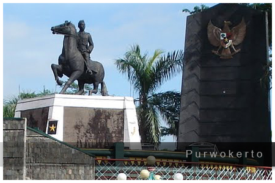

Paket Wisata Dieng dari Purwokerto – Easy Journey, Maximum Experience
Mulai petualanganmu ke Dieng langsung dari Purwokerto, tanpa ribet dan tanpa transit. Semua urusan transportasi, jadwal, hingga tiket wisata di-handle satu pintu, cukup duduk manis dan nikmati perjalanan. Kamu bisa pilih trip singkat satu hari, dua hari satu malam, atau bahkan tiga hari dua malam sesuai waktu dan mood liburan.
Penjemputan fleksibel: bisa dari alamat rumah, hotel, stasiun, atau titik mana pun di area Purwokerto. Sepanjang perjalanan kamu akan ditemani tim lokal profesional yang paham semua seluk-beluk Dieng. Cocok buat solo trip, couple, keluarga kecil, atau teman kantor yang ingin suasana liburan yang beda dari biasanya.
Semua itinerary bersifat fleksibel, bisa request destinasi tambahan atau menyesuaikan dengan rute dan cuaca. Transportasi nyaman, penginapan bersih, makan sudah termasuk, dan destinasi seru dijamin ready setiap hari.
Pilihan Paket & Durasi
- 1 Hari: Trip tanpa menginap, langsung berangkat pagi dan pulang malam. Semua destinasi utama dijalani tanpa perlu buru-buru.
- 2 Hari 1 Malam: Waktu lebih longgar, bisa nikmati sunrise, malam di pegunungan, dan lebih banyak destinasi favorit.
- 3 Hari 2 Malam: Liburan lebih santai, itinerary bisa disesuaikan, waktu eksplorasi jadi maksimal.
Fasilitas
- Transportasi pribadi (mobil/vip car, penjemputan area Purwokerto)
- Driver lokal & tour leader Dieng
- Penginapan bersih dan strategis (homestay atau hotel pilihan)
- Layanan makan lengkap sesuai itinerary
- Tiket masuk seluruh objek wisata pilihan
- Dokumentasi foto basic
- Air mineral setiap hari
- Parkir, tol, dan retribusi sudah termasuk
Destinasi Wisata Dieng
- Bukit Sikunir: Sunrise spot terbaik, view pegunungan dan golden moment di pagi hari.
- Telaga Cebong: Danau alami di kaki Sikunir, tempat sempurna buat relaksasi pagi.
- Kawah Sikidang: Kawah aktif, pengalaman melihat uap panas dan fenomena vulkanik secara dekat.
- Komplek Candi Arjuna: Area candi Hindu kuno di tengah padang hijau, nuansa heritage yang tenang.
- Batu Ratapan Angin: Bukit dengan panorama dua telaga, spot foto dan view point ikonik Dieng.
- Dieng Plateau Theater: Bioskop mini, tempat menonton film pendek sejarah dan budaya Dieng.
- Taman Pintu Langit: Taman kekinian dengan banyak spot santai dan foto di atas awan.
- Pemandian Air Panas: Nikmati sensasi berendam di air hangat alami pegunungan.
- Kahyangan Skyline: Gardu pandang dengan lanskap dataran tinggi dan kota di kejauhan.
- Dieng Park: Family park, taman bermain dan wahana outdoor yang ramah anak.
- Air Terjun Sikarim: Air terjun alami, suasana sejuk dan jauh dari keramaian.
- Telaga Menjer: Danau luas, tempat piknik dan ngadem sambil foto-foto.
- Bukit Scooter: Lokasi favorit untuk sore hari atau jelang sunset, city view & pegunungan sekaligus.
- Perkebunan Teh: Jalan santai di area kebun teh, nuansa hijau segar dan bisa lihat aktivitas petani.
- Sentra Oleh-oleh & Kuliner: Tempat belanja buah tangan dan icip-icip makanan khas Wonosobo & Dieng.
Kalau ada destinasi impian atau mau request spot tertentu, tinggal konsultasi. Semua rute bisa dikustom sesuai keinginan.
Panduan Perjalanan dari Purwokerto
Waktu tempuh dari Purwokerto ke Dieng sekitar 3-4 jam. Seluruh proses penjemputan dan perjalanan dibuat nyaman, itinerary bebas diatur dan bisa berubah mengikuti situasi terbaik. Bawalah jaket tebal dan alas kaki nyaman, karena suhu Dieng bisa sangat dingin terutama pagi dan malam hari. Seluruh kebutuhan trip sudah diurus, kamu tinggal nikmati suasana baru di dataran tinggi tanpa repot urusan teknis.
FAQ Paket Dieng dari Purwokerto
Penjemputan bisa dari alamat pribadi atau hotel?
Bisa, penjemputan fleksibel dari titik mana pun di area Purwokerto sesuai permintaan peserta.
Bisa atur sendiri rute dan destinasi?
Bisa, itinerary sangat fleksibel, bisa request destinasi favorit atau ikut rekomendasi dari tim lokal.
Paket bisa untuk berapa orang?
Bisa untuk dua orang, keluarga, atau grup kecil. Jumlah peserta tinggal disesuaikan kendaraan dan fasilitasnya.
Termasuk makan dan tiket masuk wisata?
Sudah termasuk layanan makan lengkap dan tiket masuk seluruh destinasi di itinerary.
Bisa tambah hari atau upgrade penginapan?
Bisa, tinggal diskusi sama tim reservasi agar paket sesuai kebutuhan dan budget kamu.